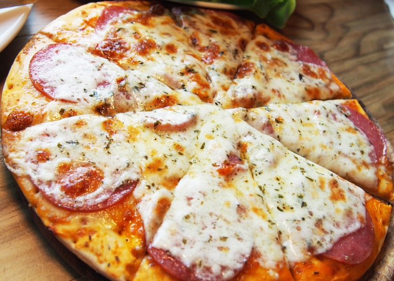
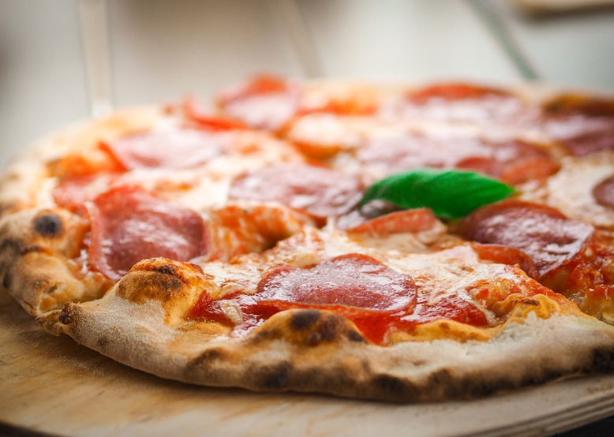
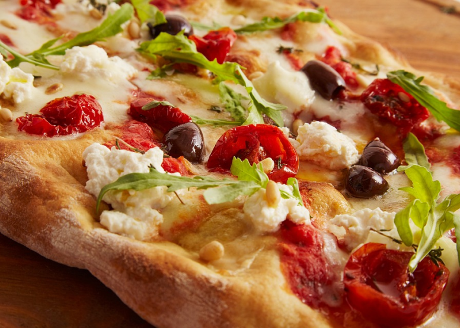
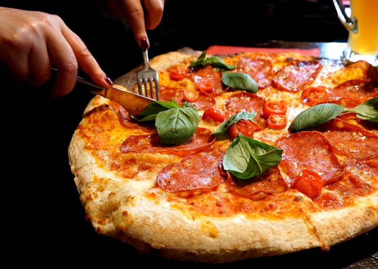
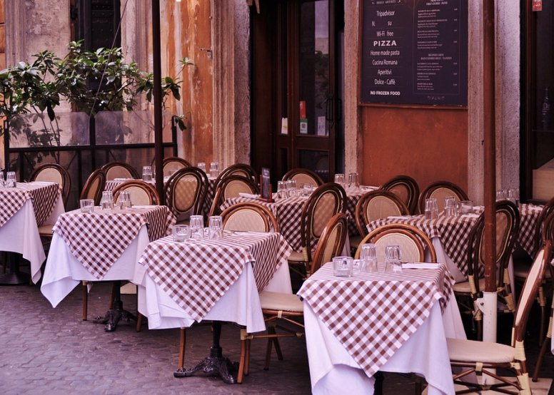
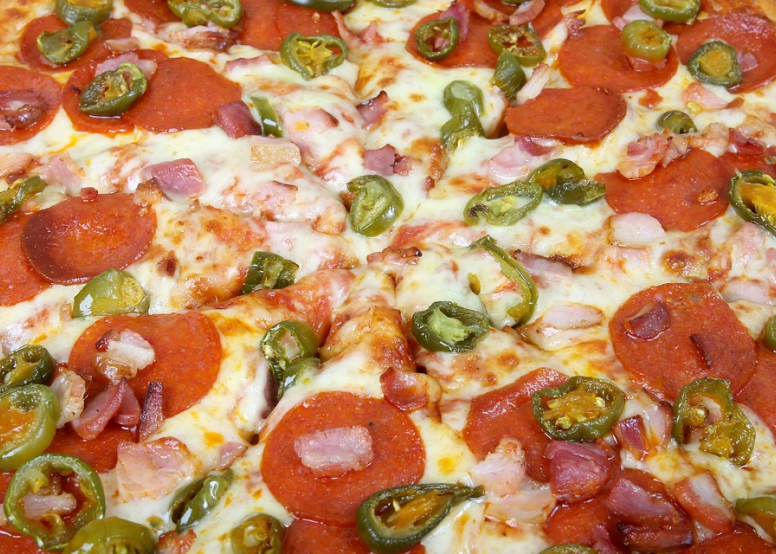
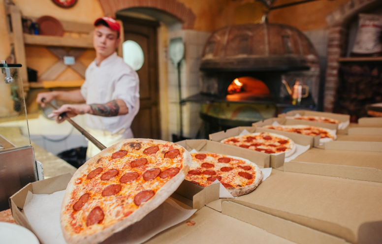
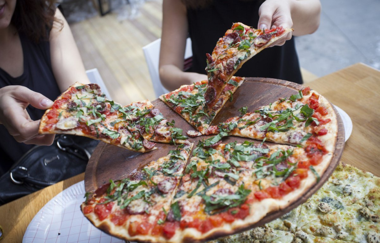
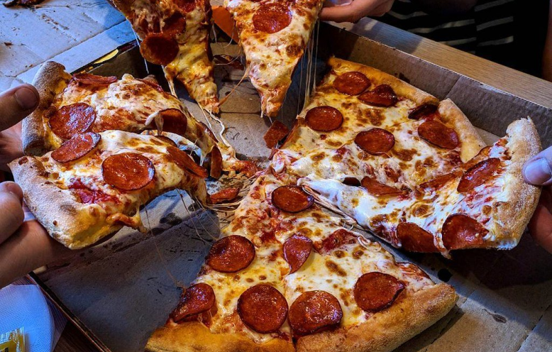

0 нас
Пиццерия BakePizza она родилась в историческом центре Пинска. Всегда внимательно относясь к выбору сырья, о все больше ориентируется на использование местных и ремесленных продуктов. Тесто медленного заквашивания с индексом гидратации 80% подчеркивает органолептические характеристики используемой органической муки.
Важность качества также является ключевой концепцией при отборе и обучении нашего персонала . Это происходит с той же самоотдачей и вниманием, что и при выборе сырья, которое делает тесто для нашей пиццы уникальным.
Галерея

